แนะนำการใช้งาน VS Code IDE + Wokwi#
▷ Wokwi#
Wokwi คืออะไร?
- เป็นซอฟต์แวร์ประเภท Web Application สำหรับการเขียนโค้ดและจำลองการทำงานของไมโครคอนโทรลเลอร์
- ทำงานแบบออนไลน์ (Online Simulator) ทำงานผ่าน เว็บเบราว์เซอร์โดยตรง ผู้ใช้ไม่จำเป็นต้องติดตั้งโปรแกรม ลงในเครื่อง
- พัฒนาเพื่อช่วยให้ผู้ใช้สามารถ ทดสอบและพัฒนาโค้ดได้โดยไม่ต้องมีฮาร์ดแวร์จริง เหมาะสำหรับการเรียนรู้และฝึกเขียนโปรแกรมไมโครคอนโทรลเลอร์ในเบื้องต้น
- เริ่มต้นพัฒนาในปี ค.ศ. 2019
- ผู้พัฒนาหลักคือ Uri Shaked นักพัฒนาซอฟต์แวร์ชาวอิสราเอล
- รองรับการเขียนโปรแกรมหลายภาษาและแพลตฟอร์ม เช่น
- Arduino (C/C++)
- MicroPython
- Rust
- C/C++
- Verilog (Digital Logic Design)
- รองรับบอร์ดไมโครคอนโทรลเลอร์ยอดนิยม เช่น
- Arduino เช่น Arduino Uno, Arduino Nano, และ Arduino Mega 2560
- ESP32 / ESP32-S3 / ESP32-C3
- Raspberry Pi Pico
- STM32 Nucleo C031, STM32 Nucleo32 L031K6
- ดูรายการฮาร์ดแวร์ได้จาก
docs.wokwi.com/getting-started/supported-hardware
- จำลองการทำงานของไมโครคอนโทรลเลอร์ ร่วมกับอุปกรณ์รอบข้าง (Peripherals) เช่น
- LED, Button, LCD 16x2 I2C, OLED I2C
- ดูรายการ Wokwi Element ได้จาก
elements.wokwi.com/
- มี Serial Monitor สำหรับตรวจสอบผลลัพธ์การทำงานของโปรแกรม
- มี
wokwi-cliสำหรับใช้งานผ่าน Command Line - มี Wokwi for VS Code ให้ใช้งานแบบ Offline ได้
Wokwi เปิดบริการให้ใช้งาน มีทั้งแบบฟรี และแบบมีค่าใช้จ่ายรายเดือน จำแนกได้ดังนี้
โดยอ้างอิงจากเว็บ wokwi.com/pricing
- Community plan (ฟรี)
- ฟรีสำหรับ งานส่วนตัว / โครงการเปิดเผย (open-source)
- สามารถสร้างโปรเจกต์สาธารณะไม่จำกัด
- Hobby & Hobby+ plan
- เหมาะสำหรับผู้ใช้งาน งานส่วนตัวขั้นสูงขึ้น แต่มีค่าใช้จ่ายรายเดือน
- Pro
- สำหรับโปรเจกต์เชิงพาณิชย์หรือผู้ใช้ที่ต้องการสมรรถนะสูงขึ้น
- University Classroom (สำหรับการศึกษา / สถาบัน)
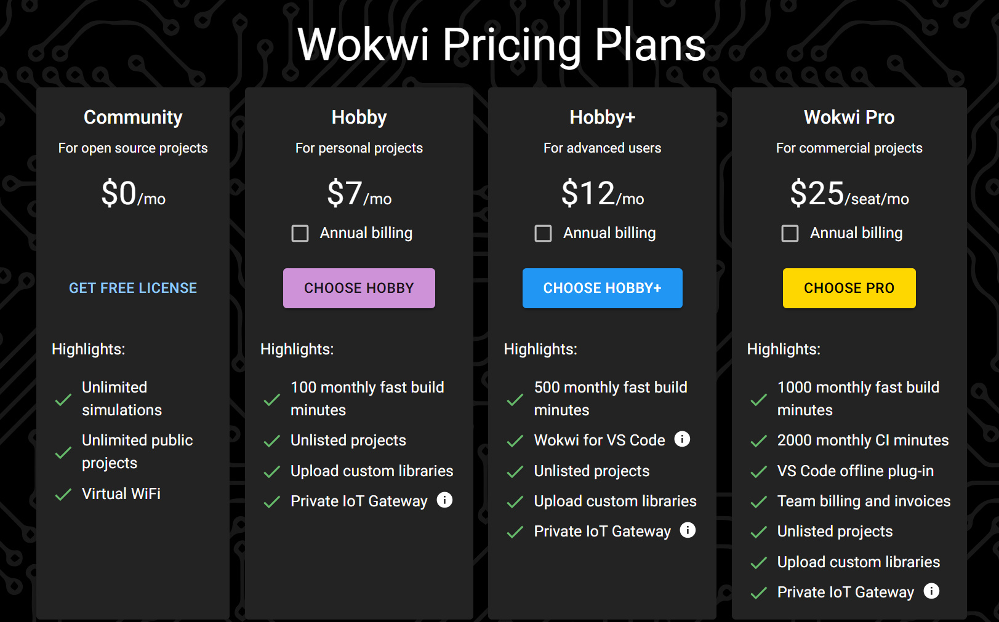
รูป: Wokwi Pricing (2025)
▷ การติดตั้ง Wokwi Extension สำหรับ VS Code IDE#
ขั้นตอนมีดังนี้
- ในการติดตั้ง VS Code IDE หากยังไม่เคยใช้งาน ให้ดาวน์โหลดและติดตั้ง Visual Studio Code ให้เรียบร้อยก่อน โดยสามารถดาวน์โหลดได้จากเว็บไซต์ทางการของ Microsoft
- เปิดใช้งาน VS Code IDE หลังจากติดตั้งเสร็จ ให้เปิดโปรแกรม Visual Studio Code (VS Code IDE)
- กรณีใช้งานบน Ubuntu โดยตรง เปิด VS Code จากเมนูแอปพลิเคชันของระบบ หรือพิมพ์คำสั่ง
codeใน Terminal
- กรณีใช้งานบน Ubuntu โดยตรง เปิด VS Code จากเมนูแอปพลิเคชันของระบบ หรือพิมพ์คำสั่ง
- ในกรณีที่ใช้ WSL2 Ubuntu สำหรับ Windows จะมีการเปิดใข้งาน VS Code ในโหมด Remote - WSL และเชื่อมต่อกับสภาพแวดล้อม Ubuntu
- ค้นหาและติดตั้ง Wokwi Extension
- ไปยังหน้าเว็บ Wokwi License สมัครเข้าใช้งาน และขอ Wokwi License Key (one-year license) ได้ฟรี เพื่อนำมาใช้กับ Wokwi Simulator ใน VS Code IDE
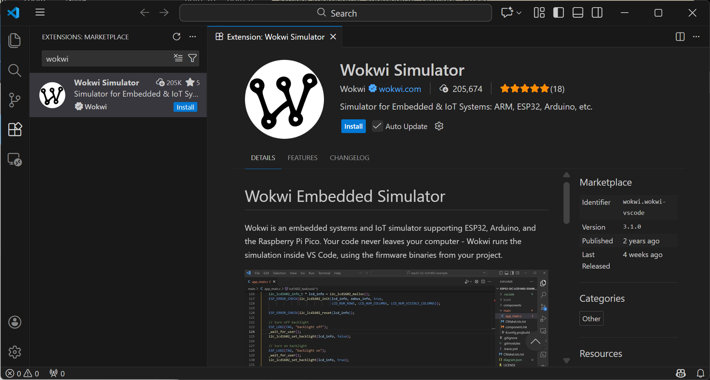
รูป: การค้นหาและติดตั้ง Wokwi Extension
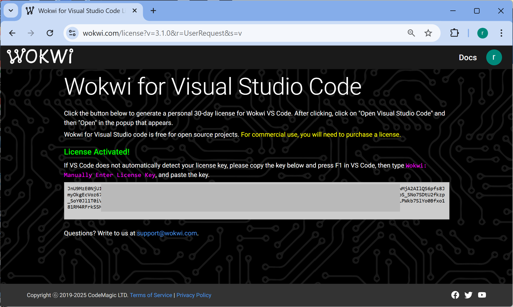
รูป: การขอ Wokwi License Key
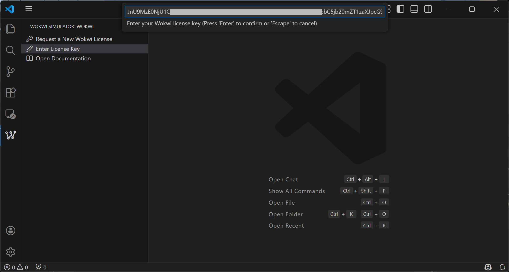
รูป: การนำ Wokwi License Key มาใช้กับ Wokwi Simulator
ข้อสังเกต: Wokwi Simulator + VS Code IDE สามารถใช้กับระบบปฏิบัติการอื่นได้ เช่น Windows และ MacOSX
▷ การติดตั้งและใช้งาน Arduino CLI#
การใช้งาน Wokwi Simulator ร่วมกับ VS Code จำเป็นต้องมีเครื่องมือสำหรับคอมไพล์โค้ด
เช่น Arduino CLI และ PlatformIO (PIO) CLI เป็นต้น
และสำหรับ Arduino Project แนะนำให้ติดตั้ง arduino-cli โดยมีขั้นตอนดังนี้
Arduino CLI เป็นเครื่องมือแบบ Command Line (ใช้ได้กับหลายระบบปฏิบัติการ)
และใช้ในการคอมไพล์โค้ด Arduino Sketch
ถัดไปเป็นขั้นตอนการติดตั้ง arduino-cli สำหรับ Ubuntu / WSL2 Ubuntu
## Arduino CLI Installation on Ubuntu / WSL2 Ubuntu
# Step 1) Install Arduino CLI
# Download and install Arduino CLI using the official install script
# The script downloads the latest arduino-cli binary into ./bin
$ curl -fsSL \
https://raw.githubusercontent.com/arduino/arduino-cli/master/install.sh | sh
$ mkdir -p $HOME/bin/
$ mv bin/arduino-cli $HOME/bin/
# Add $HOME/bin to PATH so the shell can find arduino-cli
$ echo 'export PATH="$PATH:$HOME/bin/"' >> $HOME/.bashrc
$ source $HOME/.bashrc
# Verify Arduino CLI installation and display version information
$ arduino-cli version
# Output: arduino-cli Version: 1.4.0: b7000970f Date: 2025-12-09T15:55:00Z
# Download and update the list of available Arduino cores (board packages)
$ arduino-cli core update-index
# Install the Arduino AVR core (for boards like Arduino Uno, Nano, Mega)
$ arduino-cli core install arduino:avr
# List all installed Arduino cores
$ arduino-cli core list
ดาวน์โหลดโปรเจกต์ตัวอย่างของ Wokwi สำหรับ Arduino จาก GitHub ดังต่อไปนี้
แล้วเปิดFolder /arduino-lcd-helloworld ใน VS Code IDE
# Clone an example Arduino project (LCD Hello World) from Wokwi
$ git clone https://github.com/wokwi/arduino-lcd-helloworld

รูป: ตัวอย่างโปรเจกต์ arduino-lcd-helloworld และเปิดดูไฟล์ diagram.json
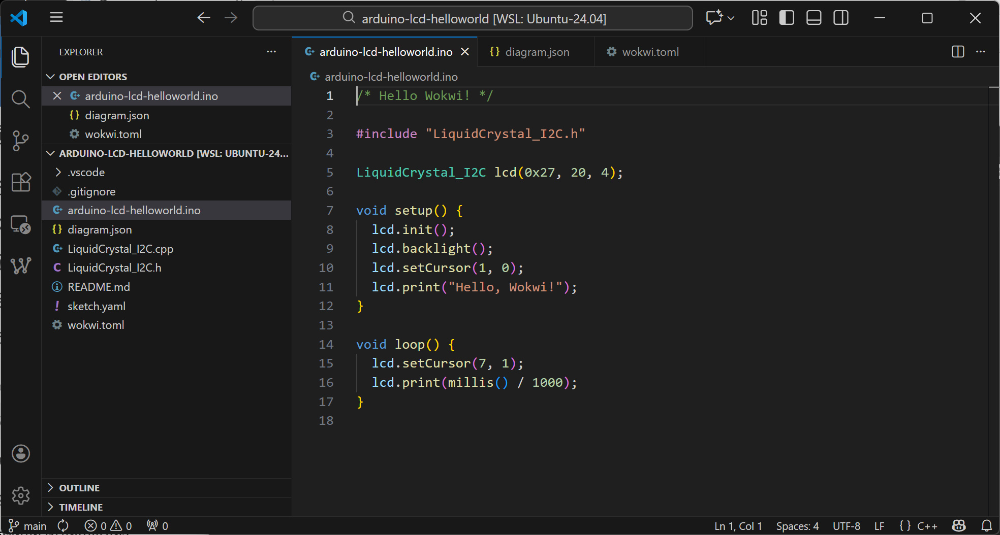
รูป: ไฟล์ .ino ในโปรเจกต์ arduino-lcd-helloworld
ไฟล์ wokwi.yaml ใช้สำหรับการตั้งค่าเพื่อใช้งานร่วมกับ Wokwi Simulator
เช่น การระบุชื่อไฟล์สำหรับ .hex และ .bin ที่ได้จากการคอมไพล์โค้ด Arduino Sketch
[wokwi]
version=1
firmware='build/arduino.avr.uno/arduino-lcd-helloworld.ino.hex'
elf='build/arduino.avr.uno/arduino-lcd-helloworld.ino.elf'
เปิดใช้งาน Terminal แล้วคอมไพล์โค้ดในโปรเจกต์ โดยใช้ arduino-cli
สำหรับบอร์ด Arduino Uno ตามตัวอย่าง และจะได้ไฟล์เอาต์พุตภายใต้ ./build/arduino.avr.uno/
$ arduino-cli compile \
--fqbn arduino:avr:uno \
--output-dir ./build/arduino.avr.uno/ .
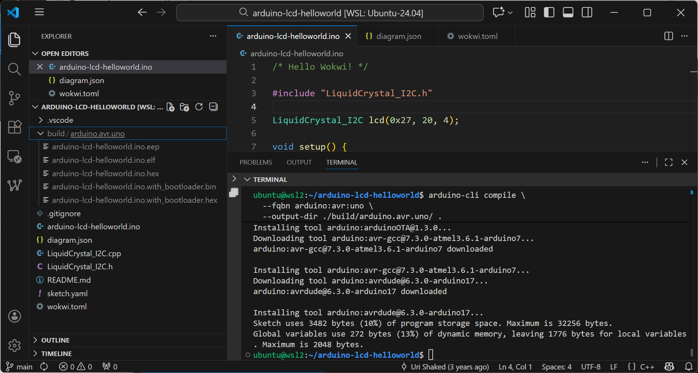
รูป: การทำคำสั่ง arduino-cli เพื่อคอมไพล์โค้ด
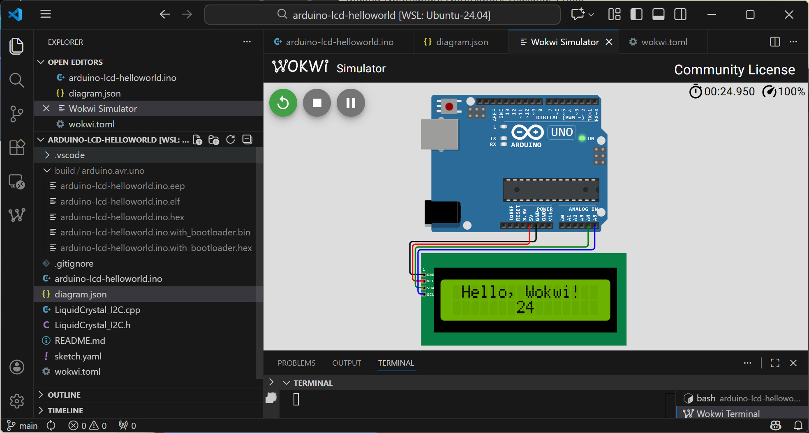
รูป: การจำลองการทำงานของโค้ดตัวอย่าง
ลองแก้ไขโค้ด เพื่อให้ส่งข้อความผ่านทาง Serial และคอมไพล์โค้ดใหม่อีกครั้งด้วย arduino-cli
#include "LiquidCrystal_I2C.h"
LiquidCrystal_I2C lcd(0x27, 20, 4);
uint32_t ts = 0; // timestamp (msec)
void setup() {
Serial.begin(115200);
lcd.init();
lcd.backlight();
lcd.setCursor(1, 0);
lcd.print("Hello, Wokwi!");
}
void loop() {
static int ticks = 0;
uint32_t now = millis();
if ( now - ts >= 1000 ) {
ts = now;
Serial.println( String("Ticks: ") + (++ticks) );
lcd.setCursor(7, 1);
lcd.print(millis() / 1000);
}
delay(10);
}
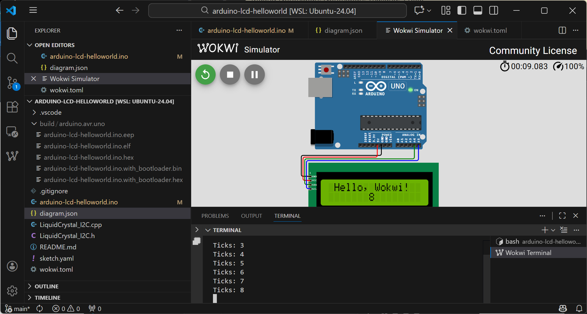
รูป: การจำลองการทำงานหลักจากแก้ไขโค้ด เพื่อให้ส่งข้อความออกทางพอร์ต Serial
การเพิ่มไฟล์ .vscode/tasks.json ในโปรเจกต์ ตามตัวอย่างต่อไปนี้ จะช่วยให้ทำคำสั่ง arduino-cli ได้สะดวกขึ้น
โดยกดคีย์ Ctrl+Shift+B ใน VS Code IDE เพื่อทำคำสั่ง
{
"version": "2.0.0",
"tasks": [
{
"label": "Arduino: Compile (Uno)",
"type": "shell",
"command": "arduino-cli",
"args": [
"compile",
"--verbose",
"--fqbn",
"arduino:avr:uno",
"--output-dir",
"${workspaceFolder}/build/arduino.avr.uno",
"."
],
"group": {
"kind": "build",
"isDefault": true
},
"problemMatcher": [
]
}
]
}
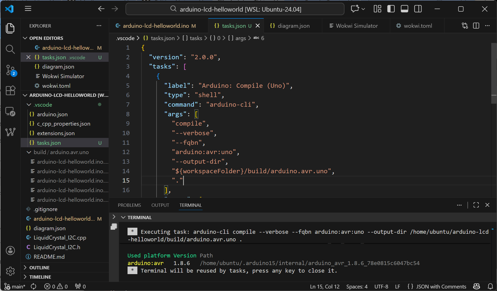
รูป: ตัวอย่างไฟล์ .vscode/tasks.json
▷ การติดตั้งและใช้งาน PlatformIO (PIO) CLI#
นอกเหนือจาก arduino-cli อีกตัวเลือกหนึ่งคือ pio ซึ่งเป็นคำสั่งที่ทำงานแบบ CLI ของโครงการ PlatformIO
- PlatformIO เป็นเครื่องมือสำหรับการพัฒนาซอฟต์แวร์ฝังตัว ที่ช่วยในการเขียนโปรแกรมสำหรับไมโครคอนโทรลเลอร์ได้ง่ายขึ้น โดยรองรับบอร์ดหลายรุ่น และรูปแบบการเขียนโค้ด (Framework) เช่น Arduino, ESP-IDF, STM32Cube
- PlatformIO Core คือ ส่วนประกอบหลักที่ทำงานในรูปแบบ Command Line Interface (CLI) ของ PlatformIO
ขั้นตอนการติดตั้ง platformio-core สำหรับ Ubuntu / WSL2 Ubuntu มีดังนี้
$ sudo apt update
$ sudo apt install -y python3 python3-venv python3-pip curl
$ PIO_URL="https://raw.githubusercontent.com/platformio/platformio-core-installer"
$ curl -fsSL -o get-platformio.py ${PIO_URL}/master/get-platformio.py
$ python3 get-platformio.py
$ echo 'export PATH=$PATH:$HOME/.platformio/penv/bin' >> ~/.bashrc
$ source ~/.bashrc
$ pio --version
# output: PlatformIO Core, version 6.1.18
ตัวอย่างการใช้งานงาน pio สำหรับโปรเกจต์ Arduino
1) สร้างโปรเจกต์ใหม่ โดยมีโครงการในไดเรกทอรี ตามรูปแบบต่อไปนี้
./arduino-lcd-helloworld-pio
├── platformio.ini
├── diagram.json
├── lib
│ └── LiquidCrystal_I2C
│ ├── LiquidCrystal_I2C.cpp
│ └── LiquidCrystal_I2C.h
├── src
│ └── arduino-lcd-helloworld.ino
└── wokwi.toml
2) สร้างไฟล์ platformio.ini ภายในโปรเจกต์ เพื่อใช้กับ pio และมีเนื้อหาภายใน ดังนี้
[env:uno]
platform = atmelavr
board = uno
framework = arduino
3) สร้างหรือแก้ไขไฟล์ wokwi.toml ภายในโปรเจกต์ สำหรับการทำงานของ Wokwi Simulator
[wokwi]
version=1
firmware='.pio/build/uno/firmware.hex'
elf='.pio/build/uno/firmware.elf'
4) ทำคำสั่ง pio run เพื่อทำขั้นตอน Build และไฟล์เอาต์พุตที่ได้จะถูกจัดเก็บไว้ภายใต้ .pio/build
5) เปิดโปรเจกต์ใน VS Code IDE และจำลองการทำงานของโค้ด
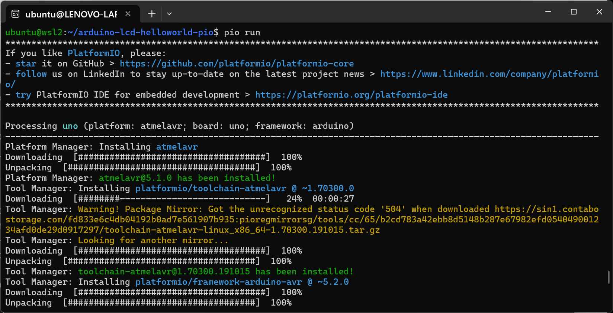
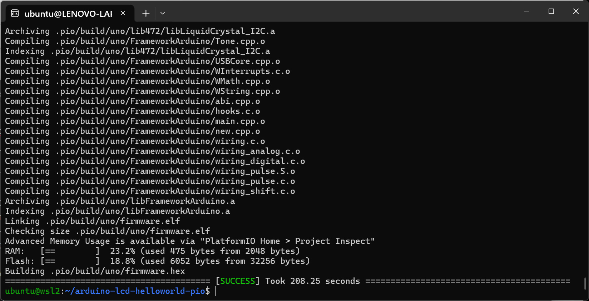
รูป: ตัวอย่างการทำคำสั่ง pio run
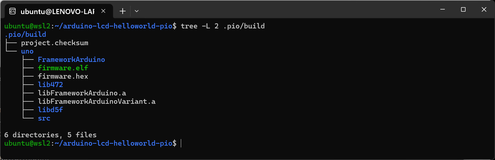
รูป: ไฟล์เอาต์พุตที่ได้จากขั้นตอน Build ซึ่งถูกจัดเก็บไว้ภายใต้ .pio/build
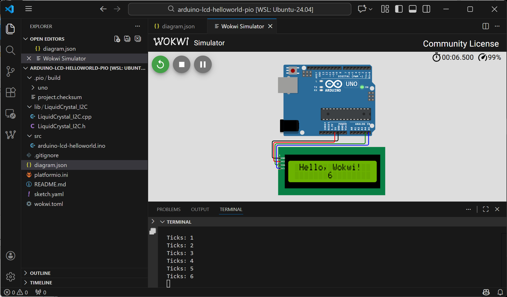
รูป: ตัวอย่างการจำลองการทำงานสำหรับไฟล์เฟิร์มแวร์ที่ได้จากการคอมไพล์ด้วย pio
▷ กล่าวสรุป#
บทความนี้นำเสนอตัวอย่างการใช้งาน Wokwi ร่วมกับ VS Code IDE เพื่อเขียนโค้ด Arduino Sketch โดยใช้บอร์ด Arduino Uno เป็นตัวอย่าง และจำลองการทำงานของระบบ โดยใช้ Wokwi Simulator
บทความที่เกี่ยวข้อง
This work is licensed under a Creative Commons Attribution-ShareAlike 4.0 International License.
Created: 2026-01-07 | Last Updated: 2026-01-07